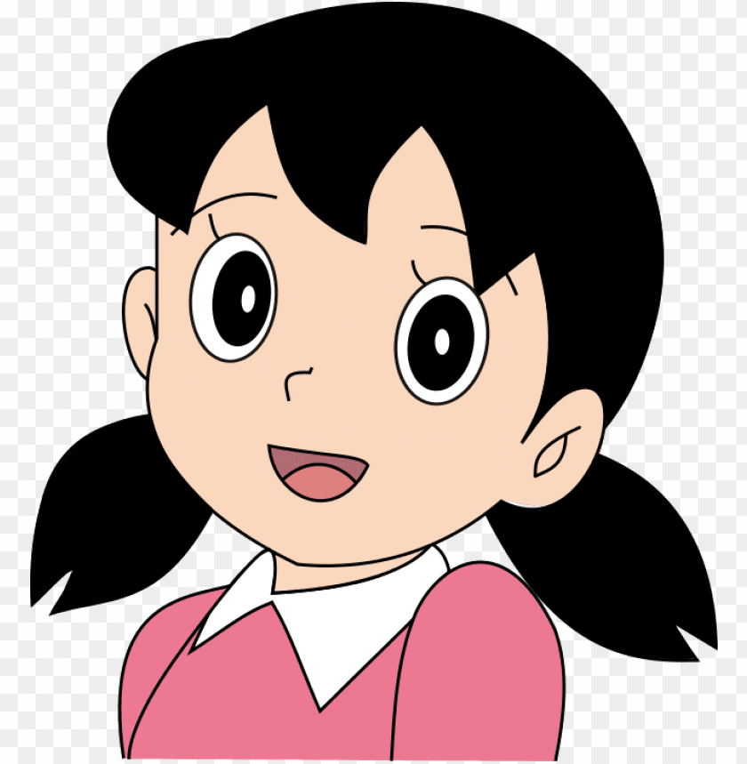

Doraemon
Doraemon is a cute blue robot cat who came from the future to help his friend Nobita. He is kind, funny, and always carries special gadgets in his magic pocket to solve problems. Children love watching Doraemon because his adventures are full of fun, friendship, and imagination. He teaches us to be helpful, caring, and never give up.
Nobita
Nobita is a kind and gentle boy who is Doraemon’s best friend. He is not very good at studies or sports, but he always tries his best. Even though he makes mistakes, he has a pure heart and cares for his friends and family.

Suzuka
Shizuka is a sweet and intelligent girl in the Doraemon story. She is Nobita’s best friend and always encourages him to do better. Shizuka is kind-hearted, polite, and loves to help others.

Doraemon Dorami
Doraemon and Dorami are robot cats from the future. Doraemon is kind, funny, and always helps his friend Nobita with amazing gadgets. Dorami is Doraemon’s little sister, and she is smart, caring, and very responsible.
Jiyan
Jian is one of Nobita’s friends in the Doraemon series. He is strong and bold but often likes to show off his power. Jian loves singing, but his voice is very loud and funny, which makes others run away